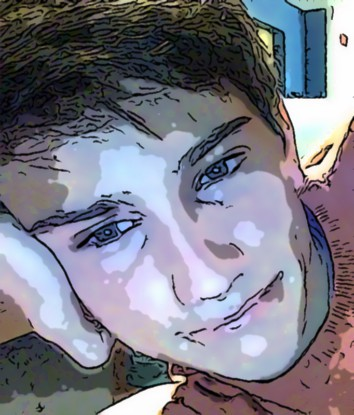

Konstantin Gizdarski · @kosigz
SW Developer. CS Undergraduate. World Traveler. Bay Area to Boston.
I think about the future and how technology will shape the way people live. Currently, I am an undergraduate at Northeastern.
In addition to studying computer science, I am a teaching assistant for CS 1800 (Discrete Mathematics), coach start-ups with IDEA: Northeastern's Venture Accelerator, and run my own programming class at Castle Square Tenants Organization.
Other than the routine, I am involved in IM Volleyball and Broomball, an avid hackathon attendant (HackBeanpot, McHacks, HackMIT 2x, LAHacks), and a self-proclaimed world traveler. I enjoy walks, problem solving, exercise, friends, and food.
Formerly, I was a software research and development co-op at Intuit, where I worked on some really cool stuff, including TurboTax for the Apple Watch and a facial expression analytics framework. I also snagged two patents and numerous awards.
My academic interests include machine learning, system design, statistics, and game theory.
I am always eager to meet people so don't be a stranger.
Built in London. With love. July 2015.